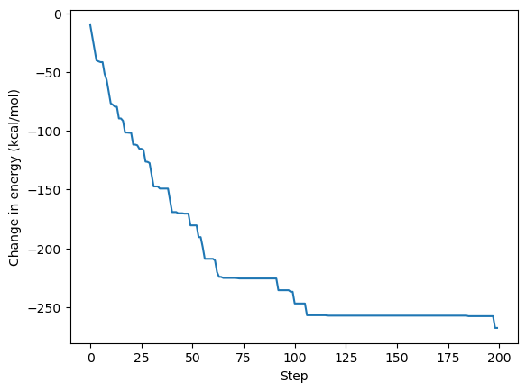

OpenMM Score Function for Amino Acid Repacking
This example demonstrates how openMM can be used with chilife to perform side chain repacking. While this example currently only works with native amino acids it will ideally lead to a set of methods to integrate with non-canonical amino acids. Because this example integrates with OpenMM it does require it as a dependency. OpenMM is best installed via cond-forge.
[1]:
import numpy as np
from scipy.optimize import linear_sum_assignment
import matplotlib.pyplot as plt
import chilife as xl
from tempfile import TemporaryDirectory
from openmm import *
from openmm.app import *
C:\Users\mhtes\micromamba\envs\openMM\Lib\site-packages\tqdm\auto.py:21: TqdmWarning: IProgress not found. Please update jupyter and ipywidgets. See https://ipywidgets.readthedocs.io/en/stable/user_install.html
from .autonotebook import tqdm as notebook_tqdm
[2]:
def match_atoms(reference, subject):
""" Helper function to match openMM atoms with chilife RotamerEnsemble atoms since they will likely be in different orders and have different names.
This works by looping through all rotamers and finding atom-pair matching that minimizes the RMSD between the RotamerEnsemble atoms and the OpenMM atoms.
This operation is performed on every rotamer in the library and the best scoring pairing is used."""
# Initialize storage variables
dmin_score = np.inf
dmap = None
# Loop through rotamers
for i, sub in enumerate(subject.coords):
# Create pairwise distance metrix between atoms
diff = reference.positions[:,None, ...] - sub[None, ...]
diff = diff * diff
diff = np.sum(diff, axis=-1)
# Identify best pairing
idx1, idx2 =linear_sum_assignment(diff)
args = [(a, b) for a, b in zip(idx1, idx2)]
score = np.sum([diff[arg] for arg in args])
# Compare with previous best and store if necessary
if score < dmin_score:
dmap = idx2
dmin_score = score
return dmap
class OpenMMEnergyFunc:
"""Score function for repacking. Note that this function uses the amber14 forcefield which does not parameterize any spin labels or most other NCAAs used by chilife. This examples uses only Natrual amino acids to demonstrate
How chiLife can be integrated with OpenMM. """
def __init__(self, protein):
"""This object will take in a single protein. This protein should have all atoms present (including hydrogen atoms) with no heterogens or other abnormalities. A structure like this can be prepared with something like PDBFixer.
For each site the structure should already be mutated to the appropriate amino acid you wish to model. This can be done using the ``xl.mutate`` function. During construction an OpenMM.Simulation object will be created
which can be re-used for all RotamerEnsembles being attached to this protein"""
protein = protein.atoms
self.protein = protein
# Write protein to temporary file to load in with OpenMM PDBFile for quick and easy topology and parameterization
with TemporaryDirectory() as tempdir:
xl.save(f'{tempdir}/tmp.pdb', protein)
pdb = PDBFile(f'{tempdir}/tmp.pdb')
# Use Amber14 forcefield with GBN2 implicit solvent model
ff = ForceField('amber14-all.xml', 'implicit/gbn2.xml')
# Use only non-bonded forces since bonded forces of the protein will not change and bonded forces of the rotamers should be accounted for in the library.
ff._forces = [force for force in ff._forces if isinstance(force, forcefield.NonbondedGenerator)]
# Create and store simulation object for energy calculations
omm_system = ff.createSystem(pdb.topology, nonbondedMethod=CutoffNonPeriodic, nonbondedCutoff=1.0*unit.nanometer)
integrator = LangevinMiddleIntegrator(300*unit.kelvin, 1/unit.picosecond, 0.004*unit.picoseconds)
self.simulation = Simulation(pdb.topology, omm_system, integrator)
def prepare_system(self, system):
# Identify and store system indices that correspond to the rotamer ensemble
psel = self.protein.select_atoms(system.selstr)
system.efunc_protein_ix = psel.ix
system.efunc_residue_ix = match_atoms(psel, system)
def __call__(self, system, **kwargs):
"""Only requirement for a chilife energy function is to accept a ``system`` and return an energy score in kcal/mol for each rotamer in that system."""
if not hasattr(system, 'efunc_protein_ix'):
self.prepare_system(system)
pose_start = self.protein.positions
Es = []
for rot in system.coords:
pose_start[system.efunc_protein_ix] = rot[system.efunc_residue_ix]
self.simulation.context.setPositions(pose_start * unit.angstrom)
energy = self.simulation.context.getState(getEnergy=True).getPotentialEnergy().value_in_unit(unit.kilocalorie_per_mole)
Es.append(energy)
Es = np.array(Es)
return Es
[3]:
# Load in protein object
protein = xl.load_protein('system.pdb')
# Create Energy function unique to this protein
omm_efunc = OpenMMEnergyFunc(protein)
# Create a rotamer ensemble of at lysine 48 using ORS and the new energy function
RL = xl.RotamerEnsemble('LYS', 48, protein, sample=5000, use_H=True, energy_func=omm_efunc)
[4]:
# Perform repacking around the new rotamer library using the same energy function
traj, de = xl.repack(protein, RL, energy_func=omm_efunc)
100%|████████████████████████████████████████████████████████████████████████████████| 200/200 [00:03<00:00, 52.54it/s]
[5]:
fig, ax = plt.subplots()
ax.plot(np.cumsum(de))
ax.set_xlabel('Step')
ax.set_ylabel('Change in energy (kcal/mol)')
plt.show()
